文字
背景
行間


カテゴリ:部活動
第30回千葉県アンサンブルコンテストの様子と第10回定期演奏会へのご案内
今日1月26日（日）は第30回千葉県合唱アンサンブルコンテストの高等学校の部が千葉市民会館大ホールを会場にして開催されました。高等学校の部は38校がそれぞれが独自の編成でバラエティに富んだ選曲で演奏していました。本校の音楽部の演奏は無伴奏女声合唱曲集「なみだうた」より序 竹久夢二詩、１．涙 林芙美子詩、３．なみだ 松本可奈子詩、４．なみだうた 谷川俊太郎詩 すべて信長貴富曲でした。その澄んだ歌声が会場に響き渡っていました。とても感動的で素晴らしい演奏でした。
さて、この音楽部の素晴らしい演奏をお聞きになりたい方は、佐倉高校音楽部の第10回定期演奏会が来る3月29日（日）に佐倉市民音楽ホールで13：00開場 13：30開演で開催予定です。皆様お誘いの上お越しください。（写真 右パンフ）


さて、この音楽部の素晴らしい演奏をお聞きになりたい方は、佐倉高校音楽部の第10回定期演奏会が来る3月29日（日）に佐倉市民音楽ホールで13：00開場 13：30開演で開催予定です。皆様お誘いの上お越しください。（写真 右パンフ）
ダンス同好会ハローウィンパフォーマンス
今日（10月24日）の昼休みにダンス同好会によるハローウィンパフォーマンスが行われました。通常であれば、公演場所は、中庭だったのですが、校舎の外壁工事中のため今回は第１体育館での公演となりました。練習も工事のため場所の確保がたいへんだったと思います。それでも、多くの生徒、先生が見守るなか日頃の練習の成果を存分に発揮していたと思います。明るく切れのあるダンスパフォーマンスありがとうございました。


いきいき茨城ゆめ国体カヌースプリント200m競技
今日10月６日（日）は第74回国民体育大会カヌースプリント競技の200ｍの全種目の準決勝までの試合が予定されていましたが、台風並みのの強風のため全種目の予選のみ行って終了しました。明日、200ｍの準決勝と決勝を行うことになりました。明日の天候が良くなることを祈ります。→10月7日の様子は >>続きを読む をクリック


今日10月7日（月）は第74回国民体育大会カヌースプリント競技の200ｍの全種目の準決勝と決勝が行われました。あいにく天候は、昨日ほど風は酷くなかったものの北西の風がコースを進む選手に対して右斜め前方から吹いてくる状況が続いていて、時折雨も強く降る中で、競技が行われました。500ｍに続いて決勝には一歩及びませんでしたが、最後の一漕ぎまで力を出し切ってくれたと思います。大会全体を通して、天候に恵まれませんでしたが、素晴らしい全国の選手達とともに競った試合経験は選手の皆さんの宝であり、今後の糧となることでしょう。本当にお疲れ様でした。そしてありがとうございました。また、応援に来ていただいた保護者の皆様や千葉県教育庁の体育課の方々、本当にありがとうございました。
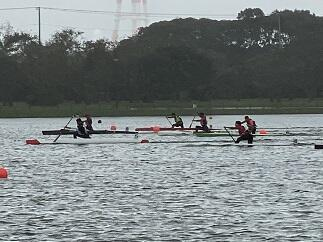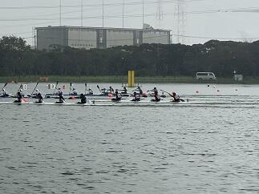
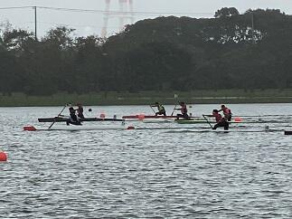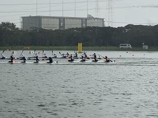
いきいき茨城ゆめ国体カヌースプリント500m競技
現在、第74回国民体育大会が、茨城県の各地を会場に開催されています。カヌースプリント競技については10月４日（金）から10月７日（月）の４日間で神栖市の神之池特設カヌー競技場で開催されています。昨日は強風の影響で予定していたすべての競技が今日に延期になりました。そのため今日10月５日（土）だけで、予選から決勝までの500ｍのすべての競技を行いました。本校からは少年男子のC1とK4の２種目に出場しました。惜しくも決勝までは、あと一歩でしたが、すばらしい試合をしてくれました。目標をクリアするため日々の練習の方法や試合に臨む気持ちの高め方、自分や友人を信じる強い気持ちの作り方など、全国での最高の檜舞台を踏むことができた選手は、また一段と大きく成長したと思います。応援に来ていたカヌー部員たちも、とても良い刺激を受けて明日からの練習に励めると思います。選手の皆さん本当にありがとうございました。明日、明後日は200ｍの競技も楽しんでください。そして、自分と仲間の力を信じて持てる力を存分に発揮して欲しいと思います。また、保護者の皆さんいつも応援ありがとうございます。


 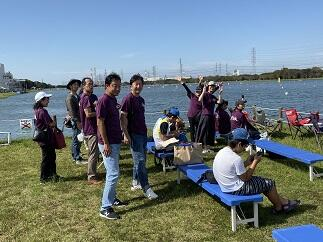
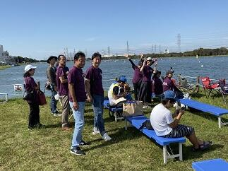
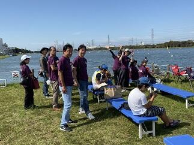 関東高等学校カヌー選手権選抜大会第２日 祝！男子総合優勝
 大会2日目はすべての競技の決勝が行われます。天候は曇りのままで持ちそうです。
大会2日目はすべての競技の決勝が行われます。天候は曇りのままで持ちそうです。気温は現在14℃ですが、19℃くらいには上がりそうです。湖面は落ち着いた状態でこのまま良いコンディションで試合が行えることを望みます。（7:00時点）
<左の写真は朝の精進湖周辺と練習風景>
→続きは ≫続きを読む 祝！関東大会男子総合優勝 をクリックしてください！
お陰様で決勝にはとても良いコンディションで試合ができました。どの競技においても本校の選手は目標をしっかりと持って試合に臨みその持てる力を十二分に発揮しました。特に本校の強みであるフォア競技では女子カヤックフォアでは２位、男子はカナディアンフォアとカヤックフォアで１位などすばらしい結果でした。その結果として、男子は学校別対抗で総合優勝、女子は総合３位になりました。今まで自分や仲間を信じて顧問の先生方とともに日々頑張って来た結果が表れたと思います。おめでとうございます。今回の試合で得た多くの貴重な経験や思いはそれぞれが、次の目標に向けて努力する良い機会になったと思います。
また、マネージャーの中沢さんは本校の選手だけでなく配艇係として大会のスムーズな運営も完璧に支えてくれました。本当にありがとうございました。
そして、今日も応援に来ていただいた保護者やご家族の皆様ありがとうございました。
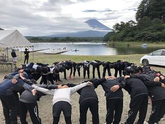


＜写真左 富士山を前に円陣組む選手たち＞＜写真中央 WK4決勝の様子＞＜写真右 閉会式 男子総合の表彰＞


＜写真左 優勝カップと喜びの選手たち＞＜写真中央 保護者の方々への感謝＞＜写真右 菅澤先生から部員へのアドバイス＞
令和元年度関東高等学校カヌー選手権選抜大会第１日
9月21日（土）、22日（日）の2日間で令和元年度関東高等学校カヌー選手権選抜大会が山梨県南都留郡富士河口湖精進湖カヌー競技場で開催されます。第1日目の今日は、すべての競技の準決勝までの試合が行われました。朝から天気は曇りで天気予報では、雨が降ったり止んだりということでしたが、試合開始前にちょっとだけ降っただけで何とか持ちました。ただ、気温は15℃位でとても寒い一日でした。本校の選手諸君は開会式の後、いつもどおり円陣を組んで試合に臨みました。それぞれ、自分の設定した目標に向かって良いチャレンジができたと思います。明日行われるすべての競技の決勝に進出することができました。明日も目標に向かって良い試合ができることを期待します。今日も応援に来てくださった保護者やご家族の皆さんありがとうございました。明日も応援よろしくお願いします。

 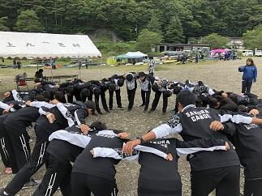
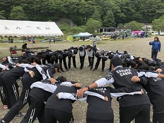
＜写真左 朝の精進湖周辺の様子と練習風景＞＜写真中央 開会式の様子＞＜写真右 円陣を作って気持ちを一つにする選手たち＞


＜写真左 wk2準決勝のレースと応援風景＞＜写真中央 選手とともに記念撮影＞＜写真右 保護者の方々と選手たち＞
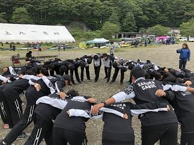＜写真左 朝の精進湖周辺の様子と練習風景＞＜写真中央 開会式の様子＞＜写真右 円陣を作って気持ちを一つにする選手たち＞
＜写真左 wk2準決勝のレースと応援風景＞＜写真中央 選手とともに記念撮影＞＜写真右 保護者の方々と選手たち＞
第74回千葉県合唱コンクール

 本日9月1日（日）に千葉・県民芸術祭～文化でつなぐ千葉のちから～第74回千葉県合唱コンクールの高等学校・大学職場一般部門が千葉県文化会館を会場に開催されました。本校の音楽部も女声合唱で出場しました。演奏曲は課題曲「飛翔ー白鷺」（「内なる遠き」から）（高野喜久雄 詩／高田三郎 曲）自由曲「O VOS OMNES」(おお すべての人よ)「SALVE REGINA」(栄えあれ、女王よ) （2曲ともKOCAR MIKLOS作曲）の3曲でした。声質も音程もすごくまとまってキレイなハーモニーでした。そして、各パートが互いの良さを引き出していて、声もとても良く出ていたと思います。この夏のコンクール出場経験や日々の練習から多くのことを学んだ成果が出ていたと思いました。音楽部の皆さんすばらしい演奏をありがとうございました。
本日9月1日（日）に千葉・県民芸術祭～文化でつなぐ千葉のちから～第74回千葉県合唱コンクールの高等学校・大学職場一般部門が千葉県文化会館を会場に開催されました。本校の音楽部も女声合唱で出場しました。演奏曲は課題曲「飛翔ー白鷺」（「内なる遠き」から）（高野喜久雄 詩／高田三郎 曲）自由曲「O VOS OMNES」(おお すべての人よ)「SALVE REGINA」(栄えあれ、女王よ) （2曲ともKOCAR MIKLOS作曲）の3曲でした。声質も音程もすごくまとまってキレイなハーモニーでした。そして、各パートが互いの良さを引き出していて、声もとても良く出ていたと思います。この夏のコンクール出場経験や日々の練習から多くのことを学んだ成果が出ていたと思いました。音楽部の皆さんすばらしい演奏をありがとうございました。 令和元年度カヌー新人大会
本日8月24日は令和元年度千葉県高等学校新人カヌー大会令和元年度関東高等学校選抜カヌー大会千葉県予選会が香取市黒部川カヌー場で行われました。大会で選考された選手は9月21日、22日に精進湖で行われる関東大会に出場します。レースコンディションとしては、風の影響で波が強く唯でさえ緊張していた初めての公式戦参加の1年生選手には思ったとおりにレース展開ができなかったかもしれません。逆に、主力となった2年生の選手の成長がすばらしく頼もしく見えました。選手の皆さんお疲れ様でした。すべての選手が今回のレースで得た課題を次の試合に向けて明日からの練習で修正していってもらえると思います。
今回も香取市水上スポーツ指導員の皆様にはいつも以上にお世話になりました。本当にありがとうございました。また、保護者の皆様にはいつも応援ありがとうございます。

 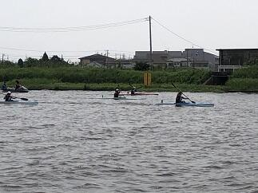
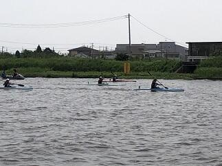


今回も香取市水上スポーツ指導員の皆様にはいつも以上にお世話になりました。本当にありがとうございました。また、保護者の皆様にはいつも応援ありがとうございます。
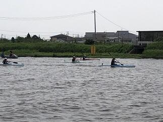 千葉県吹奏楽コンクール2019本選大会
 本日８月12日（月）第61回令和元年度千葉県吹奏楽コンクール2019本選大会（高等学校のA部門）が千葉県文化会館を会場に行われました。東関東大会への推薦校が決定される大会です。さすがに予選会を優秀な成績で通過した団体ばかりで、課題曲・自由曲どれもが団体の個性が出ていてどこも素晴らしく感動的な演奏ばかりでした。佐倉高校は演奏順番が1番でプレッシャーがかかるなか、日頃の成果を十分に発揮できたと思います。特に各楽器の個性が曲調のなかで曲の表現とともに十分に引き出された演奏が行われたと思います。素晴らしい演奏をありがとうございました。
本日８月12日（月）第61回令和元年度千葉県吹奏楽コンクール2019本選大会（高等学校のA部門）が千葉県文化会館を会場に行われました。東関東大会への推薦校が決定される大会です。さすがに予選会を優秀な成績で通過した団体ばかりで、課題曲・自由曲どれもが団体の個性が出ていてどこも素晴らしく感動的な演奏ばかりでした。佐倉高校は演奏順番が1番でプレッシャーがかかるなか、日頃の成果を十分に発揮できたと思います。特に各楽器の個性が曲調のなかで曲の表現とともに十分に引き出された演奏が行われたと思います。素晴らしい演奏をありがとうございました。 令和元年度全国総合体育大会カヌー競技大会第2日

 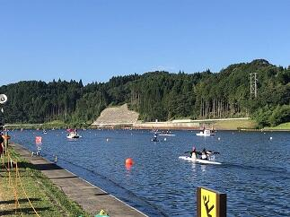本日8月４日は令和元年度全国高等学校総合体育大会カヌー競技大会の500ｍの第2日目の競技が鹿児島県伊佐市菱刈カヌー競技場で行われます。第２日目は各種目の決勝が行われます。生徒は早朝から会場入りしアップを行って、8:00からのレースに臨みます。天気予報では本日も天気は腫れで暑くなりそうです。良いレースができることを期待します。(会場にはトンボがすごくいっぱい飛んでいました。)
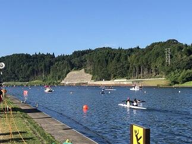本日8月４日は令和元年度全国高等学校総合体育大会カヌー競技大会の500ｍの第2日目の競技が鹿児島県伊佐市菱刈カヌー競技場で行われます。第２日目は各種目の決勝が行われます。生徒は早朝から会場入りしアップを行って、8:00からのレースに臨みます。天気予報では本日も天気は腫れで暑くなりそうです。良いレースができることを期待します。(会場にはトンボがすごくいっぱい飛んでいました。)
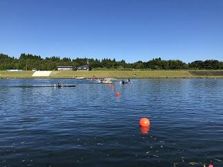
 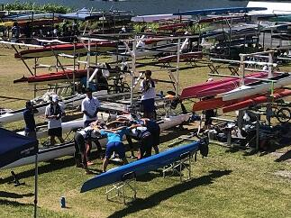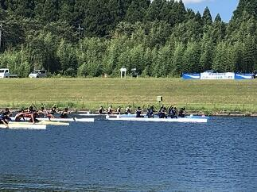
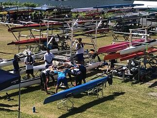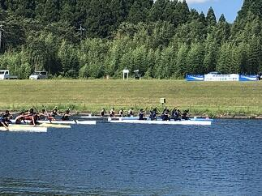 台風8号の接近が予想されているため、明日５日、明後日６日に予定されていた200ｍ競技については中止になりました。大変残念ですが今年度の総体のカヌー競技スプリントの部は今日の500ｍ決勝で終わりとなりました。気力の充実した実力伯仲の選手たちが繰り広げた決勝は、最後の最後の一漕ぎまで結果がわからない手に汗にぎるレースばかりでした。選手の皆さん本当にお疲れ様でした。そして最後まで感動をありがとうございました。
台風8号の接近が予想されているため、明日５日、明後日６日に予定されていた200ｍ競技については中止になりました。大変残念ですが今年度の総体のカヌー競技スプリントの部は今日の500ｍ決勝で終わりとなりました。気力の充実した実力伯仲の選手たちが繰り広げた決勝は、最後の最後の一漕ぎまで結果がわからない手に汗にぎるレースばかりでした。選手の皆さん本当にお疲れ様でした。そして最後まで感動をありがとうございました。
さて、千葉県選手団の結果ですが、本校から決勝に進出したC4では入賞はできませんでしたが、素晴らしいスタートを切れたレースでした。小見川高校が出場した男子K1は6位、女子K1は1位、K2は2位、K4は1位と昨年に続く素晴らしい結果でした。おめでとうございます。最後まで、応援してくださったOBや選手のご家族の皆さんありがとうございました。選手は最高の舞台で多くの刺激を受けるとともに多くのことを学ぶことができたと思います。そして、また一段と成長することができたと思います。これからもここまで努力してきた経験を多くの場面で生かしていってください。
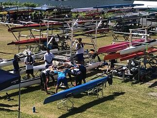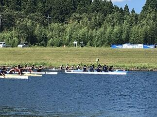台風8号の接近が予想されているため、明日５日、明後日６日に予定されていた200ｍ競技については中止になりました。大変残念ですが今年度の総体のカヌー競技スプリントの部は今日の500ｍ決勝で終わりとなりました。気力の充実した実力伯仲の選手たちが繰り広げた決勝は、最後の最後の一漕ぎまで結果がわからない手に汗にぎるレースばかりでした。選手の皆さん本当にお疲れ様でした。そして最後まで感動をありがとうございました。さて、千葉県選手団の結果ですが、本校から決勝に進出したC4では入賞はできませんでしたが、素晴らしいスタートを切れたレースでした。小見川高校が出場した男子K1は6位、女子K1は1位、K2は2位、K4は1位と昨年に続く素晴らしい結果でした。おめでとうございます。最後まで、応援してくださったOBや選手のご家族の皆さんありがとうございました。選手は最高の舞台で多くの刺激を受けるとともに多くのことを学ぶことができたと思います。そして、また一段と成長することができたと思います。これからもここまで努力してきた経験を多くの場面で生かしていってください。
令和元年度全国総合体育大会カヌー競技大会第１日
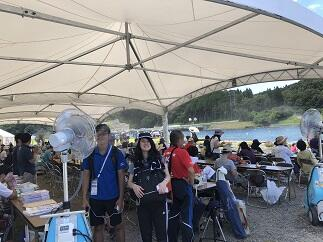


 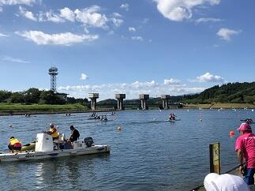
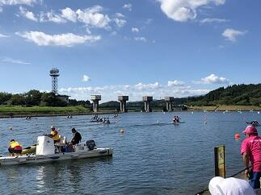

 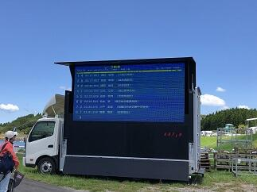本日8月3日は令和元年度全国高等学校総合体育大会カヌー競技大会の500ｍ競技の第１日目が鹿児島県伊佐市菱刈カヌー競技場で行われました。本日は、すべての種目の予選と準決勝が行われました。本校からは、男子のK４、C４、K２、C２、C1の5種目に出場しました。猛暑の中、全国から集まった選手たちは最後の最後まで持てる力を十分に発揮して素晴らしいレースを繰り広げていました。選手の皆さん、お疲れ様でした。それと共に感動をありがとうございました。本校からはC4で明日の決勝に進出することができました。千葉県選手団としては、小見川高校から女子K４、K2、K1、男子K1で明日の決勝に進出しました。おめでとうございます。明日の決勝もここまで共に頑張ってきた仲間と自分を信じてレースを楽しんで欲しいと思います。あわせて、カヌー部OBや選手のご家族の皆さん、応援いつもありがとうございます。明日も応援よろしくお願いします。
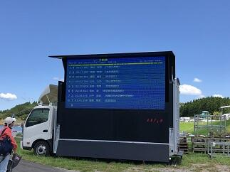本日8月3日は令和元年度全国高等学校総合体育大会カヌー競技大会の500ｍ競技の第１日目が鹿児島県伊佐市菱刈カヌー競技場で行われました。本日は、すべての種目の予選と準決勝が行われました。本校からは、男子のK４、C４、K２、C２、C1の5種目に出場しました。猛暑の中、全国から集まった選手たちは最後の最後まで持てる力を十分に発揮して素晴らしいレースを繰り広げていました。選手の皆さん、お疲れ様でした。それと共に感動をありがとうございました。本校からはC4で明日の決勝に進出することができました。千葉県選手団としては、小見川高校から女子K４、K2、K1、男子K1で明日の決勝に進出しました。おめでとうございます。明日の決勝もここまで共に頑張ってきた仲間と自分を信じてレースを楽しんで欲しいと思います。あわせて、カヌー部OBや選手のご家族の皆さん、応援いつもありがとうございます。明日も応援よろしくお願いします。
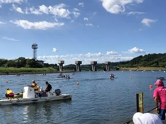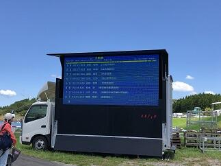本日8月3日は令和元年度全国高等学校総合体育大会カヌー競技大会の500ｍ競技の第１日目が鹿児島県伊佐市菱刈カヌー競技場で行われました。本日は、すべての種目の予選と準決勝が行われました。本校からは、男子のK４、C４、K２、C２、C1の5種目に出場しました。猛暑の中、全国から集まった選手たちは最後の最後まで持てる力を十分に発揮して素晴らしいレースを繰り広げていました。選手の皆さん、お疲れ様でした。それと共に感動をありがとうございました。本校からはC4で明日の決勝に進出することができました。千葉県選手団としては、小見川高校から女子K４、K2、K1、男子K1で明日の決勝に進出しました。おめでとうございます。明日の決勝もここまで共に頑張ってきた仲間と自分を信じてレースを楽しんで欲しいと思います。あわせて、カヌー部OBや選手のご家族の皆さん、応援いつもありがとうございます。明日も応援よろしくお願いします。 第43回全国高等学校総合文化祭
 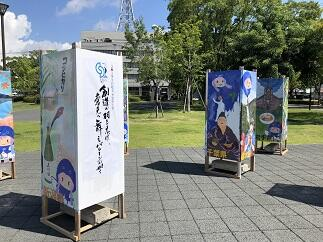
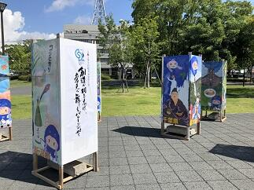
 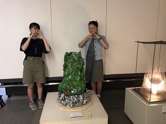
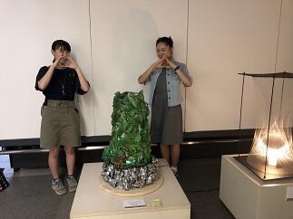 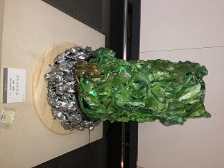
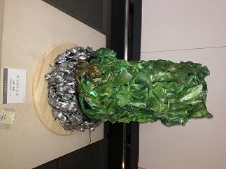 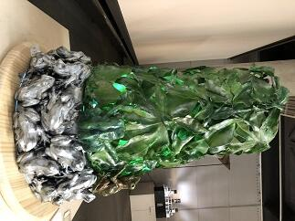
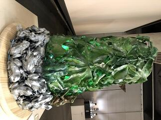 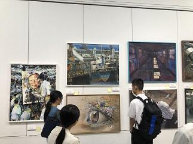
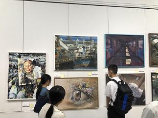 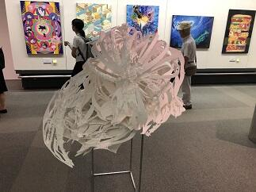
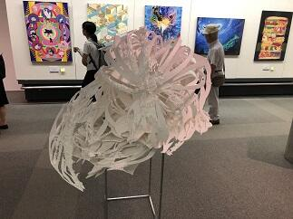 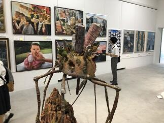今年度の全国高等学校総合文化祭は佐賀県で開催されています。美術・工芸部門は佐賀県立の博物館と美術館を会場に7月27日から31日まで作品の展示が行われています。そこには、全国から選ばれた絵画、版画、彫刻、デザイン、工芸、映像など約400点の作品が展示されています。本校からも県の代表として美術・工芸部門で吉原さんの作品が出展されています。吉原さんの作品は制作日数も約９か月という大作で、部分ごとに違った多くの素材や制作技法が施されていて、しかも完成度が高いものとなっていました。展示されているどの作品も目を奪われ感動するものばかりでした。全国から参加している生徒たちには、期間中に、他の生徒たちとともに、グループ活動や専門家による研修会など多くの学びの機会が用意されています。これらにより知識やスキルの向上はもとより、多くの刺激を受けることで更なる創作意欲が膨らむ素晴らしい機会になっていると思います。
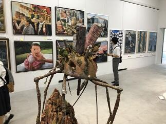今年度の全国高等学校総合文化祭は佐賀県で開催されています。美術・工芸部門は佐賀県立の博物館と美術館を会場に7月27日から31日まで作品の展示が行われています。そこには、全国から選ばれた絵画、版画、彫刻、デザイン、工芸、映像など約400点の作品が展示されています。本校からも県の代表として美術・工芸部門で吉原さんの作品が出展されています。吉原さんの作品は制作日数も約９か月という大作で、部分ごとに違った多くの素材や制作技法が施されていて、しかも完成度が高いものとなっていました。展示されているどの作品も目を奪われ感動するものばかりでした。全国から参加している生徒たちには、期間中に、他の生徒たちとともに、グループ活動や専門家による研修会など多くの学びの機会が用意されています。これらにより知識やスキルの向上はもとより、多くの刺激を受けることで更なる創作意欲が膨らむ素晴らしい機会になっていると思います。関連ページ→工芸部 全国高等学校総合文化祭
野球応援No.3


 本日７月17日（水）14:00からマリンスタジアムで市立柏高校との試合が予定されています。この試合に向けて本校応援団もバスで移動しました。皆さん、今日も応援よろしくお願いいたします。
本日７月17日（水）14:00からマリンスタジアムで市立柏高校との試合が予定されています。この試合に向けて本校応援団もバスで移動しました。皆さん、今日も応援よろしくお願いいたします。→ たくさんの応援ありがとうございました。
応援団の皆さん、佐倉高校の応援は気持ちがこもっていて、とっても暖かい素晴らしい応援でした。今日の試合は負けてしまいましたが、野球部の皆さん今年の夏の大会もたくさんの感動をありがとうございました。また、たくさんの皆様の応援ありがとうございました。今後ともよろしくお願いいたします。
カヌー競技国体関東ブロック大会
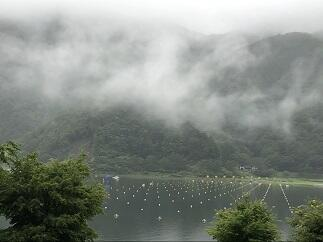 今日は山梨県の精進湖でカヌースプリント競技の国体の関東ブロック大会が行われます。昨日の予報では競技時間に大雨の予想でしたが、予報より早く大雨が通り過ぎてくれたので、このままいけば10:00には少しでも良いコンディションで競技ができそうです。
今日は山梨県の精進湖でカヌースプリント競技の国体の関東ブロック大会が行われます。昨日の予報では競技時間に大雨の予想でしたが、予報より早く大雨が通り過ぎてくれたので、このままいけば10:00には少しでも良いコンディションで競技ができそうです。
なお、高校生が出場する少年の部では７つの競技（少年男子・女子それぞれでカヤックシングル、カヤックペア、少年男子のカナディアンシングル、カナディアンペアとカヤックフォア）が行われます。
→ 祝 国体出場決定への続きは下の>>続きを読むをクリックしてください。
今日は山梨県の精進湖でカヌースプリント競技の国体の関東ブロック大会が行われます。昨日の予報では競技時間に大雨の予想でしたが、予報より早く大雨が通り過ぎてくれたので、このままいけば10:00には少しでも良いコンディションで競技ができそうです。なお、高校生が出場する少年の部では７つの競技（少年男子・女子それぞれでカヤックシングル、カヤックペア、少年男子のカナディアンシングル、カナディアンペアとカヤックフォア）が行われます。
→ 祝 国体出場決定への続きは下の>>続きを読むをクリックしてください。
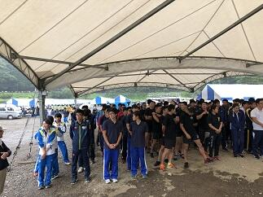


 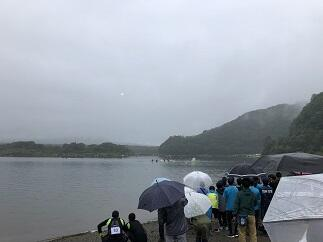
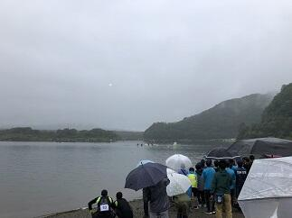
9:00から大会の開会式が行われました。開会式では本大会を主管する千葉県カヌー協会本清秀雄会長から選手の皆さんへのご挨拶や選手代表の宣誓などが行われました。本大会では関東の各都県の１位の代表選手が集まって行われる競技となります。大会委員長の千葉県スポーツ協会の青木寛専務理事や多くの保護者の方々が見守るなか10:00から予定通りに競技が開始されました。雨は途切れませんでしたが、霧雨のような状態が多く、富士山や周りの山からの吹きおろしの風が無かったので湖面も落ち着いた状態で競技を行うことができました。各種目ごとに決められた通過数までの順位の人だけが10月に茨城県神栖市神之池カヌー場でおこなわれる国体に出場できます。今回の結果は千葉県としては少年の部において７種目中５種目で国体に出場できることになりました。本校からもカナディアンシングルとカヤックフォアの2種目で県代表として選手が出場することが決まりました。おめでとう！！今回の大会で得ることができた多くのことを生かして国体での入賞を目指して励んでもらいたいと思います。最後に、大会運営をされた千葉県カヌー協会、山梨県カヌー協会の皆様ありがとうございました。また、保護者の皆様、OB,OGの皆様、今日も応援ありがとうございました。これからもよろしくお願いいたします。
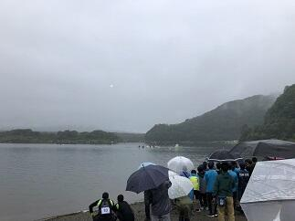9:00から大会の開会式が行われました。開会式では本大会を主管する千葉県カヌー協会本清秀雄会長から選手の皆さんへのご挨拶や選手代表の宣誓などが行われました。本大会では関東の各都県の１位の代表選手が集まって行われる競技となります。大会委員長の千葉県スポーツ協会の青木寛専務理事や多くの保護者の方々が見守るなか10:00から予定通りに競技が開始されました。雨は途切れませんでしたが、霧雨のような状態が多く、富士山や周りの山からの吹きおろしの風が無かったので湖面も落ち着いた状態で競技を行うことができました。各種目ごとに決められた通過数までの順位の人だけが10月に茨城県神栖市神之池カヌー場でおこなわれる国体に出場できます。今回の結果は千葉県としては少年の部において７種目中５種目で国体に出場できることになりました。本校からもカナディアンシングルとカヤックフォアの2種目で県代表として選手が出場することが決まりました。おめでとう！！今回の大会で得ることができた多くのことを生かして国体での入賞を目指して励んでもらいたいと思います。最後に、大会運営をされた千葉県カヌー協会、山梨県カヌー協会の皆様ありがとうございました。また、保護者の皆様、OB,OGの皆様、今日も応援ありがとうございました。これからもよろしくお願いいたします。
野球応援No.2
本日の流通経済大学付属柏高校との対戦は、２－１で本校の勝利で次の試合に進むことができました。野球部の選手のみんなが明るく自信に満ちていて、終始落ち着いた表情で試合に臨んでいることにいつも感心させられます。特に守備については冷静な判断と確かな技術でプレーしている姿に観ている我々が本当に落ち着いて試合を観ていることができました。自分と一緒に練習を頑張ってきた仲間や先生を信じてプレーすることのできるすばらしいチームだとあらためて感じました。さらに、選手を支えてくれたのは応援席から応援し続けてくださった人たち。その人たちからの声や思いがどれだけ選手を元気づけてくれたことか本当に感謝にたえません。本校の応援席は応援団や先生方、生徒に加え保護者の皆様や野球部OBの方々等多くの方が応援に来てくださり、写真にあるように満杯でした。多くの人たちが思いを一つにできる応援ってすばらしいですね。今日も応援本当にありがとうございました。次は市立柏高校とマリンスタジアムで７月15日（月）14:00に試合開始予定です。ただし、明日の天候によっては明日以降の試合が順延になることも考えれますので試合の開催日程については大会ホームページでご確認ください。次も応援よろしくお願いいたします。
→なお、追加情報は写真の下の>>続きを読むをクリックしてください。

 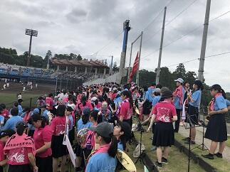
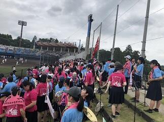 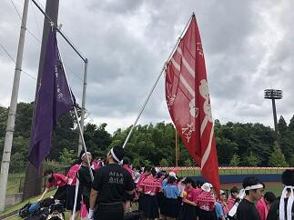
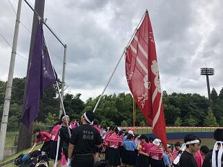 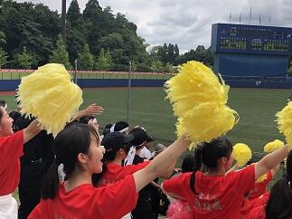
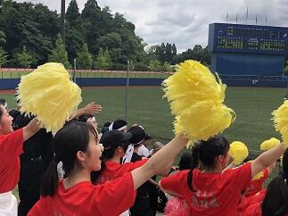


 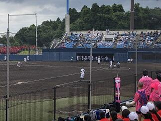
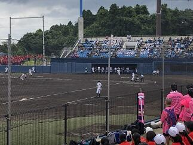

 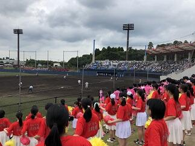
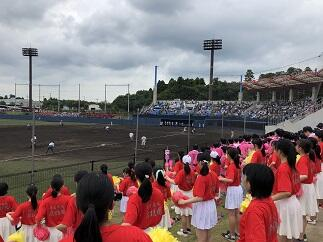
 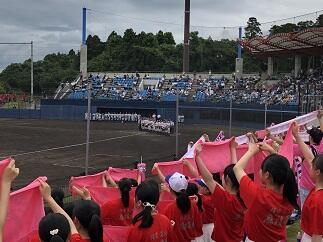
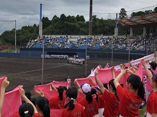

→なお、追加情報は写真の下の>>続きを読むをクリックしてください。
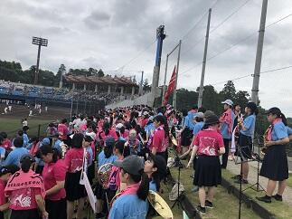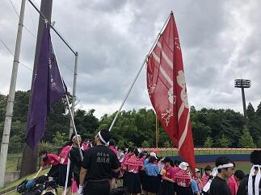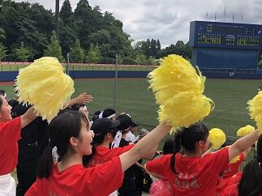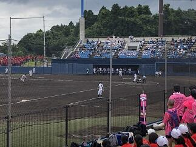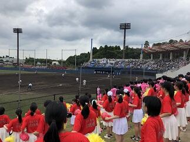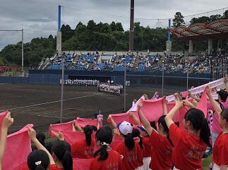
長引く梅雨の影響で、本日（７月16日）に予定されていた千葉大会第３回戦の試合も明日（７月17日）に順延となりました。台風も接近しているようで梅雨前線への影響もかなり予想されているため試合を予定どおり実施するのが難しい状況が続きそうです。つきましては大会日程について大会ホームページをご確認くださるようお願いいたします。
→７月17日（水）7:40現在今日の試合は予定通り行うそうです。応援よろしくお願いします。
→７月17日（水）7:40現在今日の試合は予定通り行うそうです。応援よろしくお願いします。
野球応援No.1
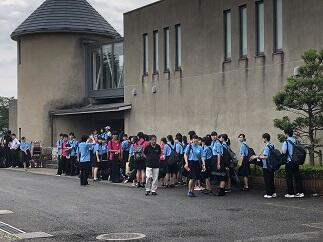
 今日７月13日（土）は、第101回全国高等学校野球選手権千葉大会の第2回戦の相手である流通経済大学付属柏高校との対戦の日です。試合開始は11:30の予定。早朝から集まってくださった応援委員と吹奏楽部による大応援団の皆さんと顧問の先生方ととともにバスで一路、対戦の地ナスパスタジアムを目指します。皆さんも応援よろしくお願いします。
今日７月13日（土）は、第101回全国高等学校野球選手権千葉大会の第2回戦の相手である流通経済大学付属柏高校との対戦の日です。試合開始は11:30の予定。早朝から集まってくださった応援委員と吹奏楽部による大応援団の皆さんと顧問の先生方ととともにバスで一路、対戦の地ナスパスタジアムを目指します。皆さんも応援よろしくお願いします。
今日７月13日（土）は、第101回全国高等学校野球選手権千葉大会の第2回戦の相手である流通経済大学付属柏高校との対戦の日です。試合開始は11:30の予定。早朝から集まってくださった応援委員と吹奏楽部による大応援団の皆さんと顧問の先生方ととともにバスで一路、対戦の地ナスパスタジアムを目指します。皆さんも応援よろしくお願いします。 カヌー関東大会決勝
 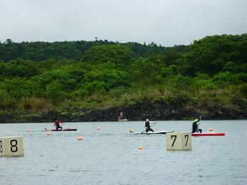
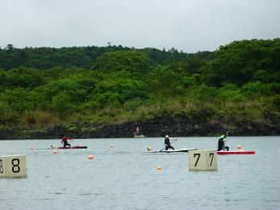
 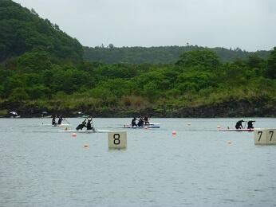
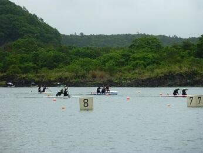 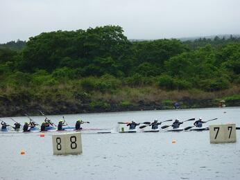
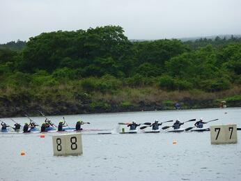
 決勝レースは,9：00からの開始でした。天候は何とか朝の時点よりは雨も少なくなりすべてのレースを無事に行うことができました。選手は最後まで自らの目標をしっかりと意識して素晴らしいレースを展開してくれました。いつもそうですが、見るたびに成長する生徒たちに感動しました。今日も多くのご家族の応援するなか選手は全力を発揮できたと思います。結果として、男子も女子も関東で準優勝の栄冠を勝ち取ることができました。選手の皆さん、選手をご指導していただいた顧問の菅澤先生、西山先生おめでとうございます。選手の皆さんは、これまでの経験を自信に、これからもいろいろな場面で頑張ってほしいと思います。選手の皆さん、ご家族の皆さん顧問の先生方、関係者の皆さん本当にありがとうございました。
決勝レースは,9：00からの開始でした。天候は何とか朝の時点よりは雨も少なくなりすべてのレースを無事に行うことができました。選手は最後まで自らの目標をしっかりと意識して素晴らしいレースを展開してくれました。いつもそうですが、見るたびに成長する生徒たちに感動しました。今日も多くのご家族の応援するなか選手は全力を発揮できたと思います。結果として、男子も女子も関東で準優勝の栄冠を勝ち取ることができました。選手の皆さん、選手をご指導していただいた顧問の菅澤先生、西山先生おめでとうございます。選手の皆さんは、これまでの経験を自信に、これからもいろいろな場面で頑張ってほしいと思います。選手の皆さん、ご家族の皆さん顧問の先生方、関係者の皆さん本当にありがとうございました。 カヌー関東大会第2日の朝
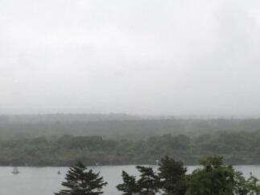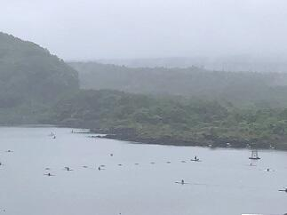今日の大会2日目の朝はあいにく小雨模様です。少しでも天候が回復することを祈るだけです。
カヌー関東大会第1日(予選、準決勝)
先日ご紹介したように、今日6月8日（土）と明日9日（日）にかけて、山梨県の精進湖カヌー競技場で令和元年度関東高等学校カヌー大会が行われています。昨日7日（金）、関東は梅雨入りでしたが、精進湖では土砂降りの雨が降ったそうです。試合の本番である本日は朝から晴れたり曇ったりで、時折すごく強い風が吹きはしまたが、雨が降ることも無く、子供たちや大会関係者の思いが通じてまずまずのコンディションで試合が行われました。

 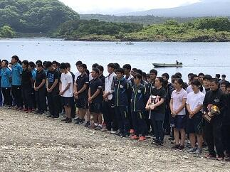
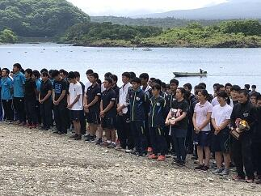

 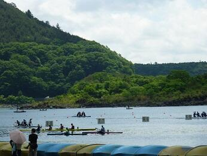
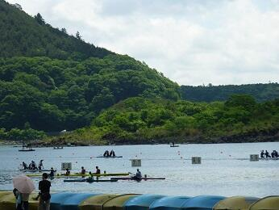 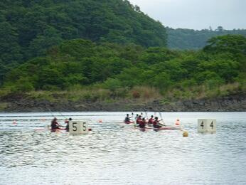開会式にはまるでタイミングを合わせるように富士山がお姿を現し令和元年の最初の大会開会式に花を添えてくれました。こうした天候のもと、本日のレースは明日の9種目すべての決勝戦が行えるように予選や準決勝が行なわれました。
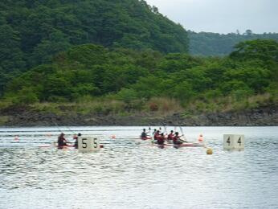開会式にはまるでタイミングを合わせるように富士山がお姿を現し令和元年の最初の大会開会式に花を添えてくれました。こうした天候のもと、本日のレースは明日の9種目すべての決勝戦が行えるように予選や準決勝が行なわれました。
生徒は一戦一戦自ら目標をしっかりと定めて各レースに臨んでくれました。どのレースでも素晴らしい戦いを繰り広げてくれました。
明日の決勝9種目すべてに本校選手が勝ち残っています。生徒の日ごろの鍛錬の成果の一つのあらわれだと思います。明日も良コンディションの下で熱い試合が展開されることを期待します。選手の皆さん今日はお疲れ様でした。そして、明日も自分と仲間の力を信じて試合を思い切り楽しんでください。
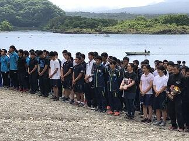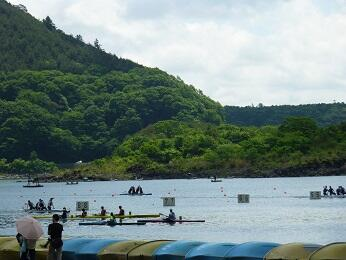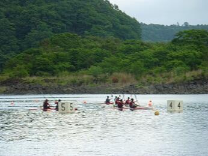開会式にはまるでタイミングを合わせるように富士山がお姿を現し令和元年の最初の大会開会式に花を添えてくれました。こうした天候のもと、本日のレースは明日の9種目すべての決勝戦が行えるように予選や準決勝が行なわれました。生徒は一戦一戦自ら目標をしっかりと定めて各レースに臨んでくれました。どのレースでも素晴らしい戦いを繰り広げてくれました。
明日の決勝9種目すべてに本校選手が勝ち残っています。生徒の日ごろの鍛錬の成果の一つのあらわれだと思います。明日も良コンディションの下で熱い試合が展開されることを期待します。選手の皆さん今日はお疲れ様でした。そして、明日も自分と仲間の力を信じて試合を思い切り楽しんでください。
カヌー競技総体千葉県予選等応援(N0.1)
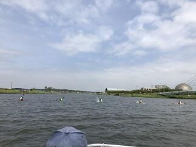

 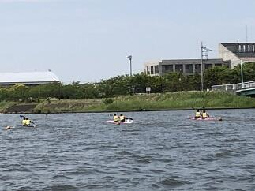
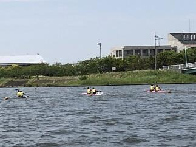
 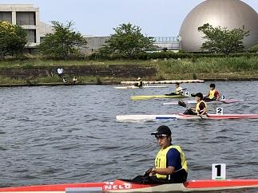
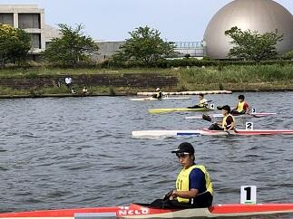 第72回千葉県高等学校総合体育大会カヌー競技令和元年度全国高等学校総合体育大会千葉県予選会と令和元年度千葉県民体育大会第二部（国体カヌースプリント競技県予選会）の第1日目が本日6月1日（土）に香取市黒部川カヌー場で行われました。
第72回千葉県高等学校総合体育大会カヌー競技令和元年度全国高等学校総合体育大会千葉県予選会と令和元年度千葉県民体育大会第二部（国体カヌースプリント競技県予選会）の第1日目が本日6月1日（土）に香取市黒部川カヌー場で行われました。
天候は、曇りで、風が時折強く吹くコンディションの下でレースが行われましたが、本日予定していたレースはすべて無事に行うことができました。これも大会運営に携わっていただいている千葉県高等学校体育連盟カヌー専門部の先生方はじめ香取市水上スポーツ指導員の皆様のお蔭です。いつも本当にありがとうございます。レースでは、多くのご家族の方々、先輩、仲間が応援する中、選手の皆さんは自分や仲間を信じて全力を発揮できたと思います。今日はお疲れ様でした。そして明日もレースを楽しんでください。また、応援してくださった皆さん本当にありがとうございました。明日も同会場で第2日目が行われますので、応援よろしくお願いいたします。
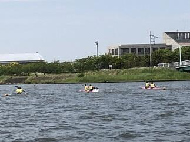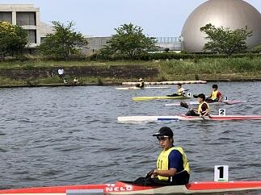第72回千葉県高等学校総合体育大会カヌー競技令和元年度全国高等学校総合体育大会千葉県予選会と令和元年度千葉県民体育大会第二部（国体カヌースプリント競技県予選会）の第1日目が本日6月1日（土）に香取市黒部川カヌー場で行われました。天候は、曇りで、風が時折強く吹くコンディションの下でレースが行われましたが、本日予定していたレースはすべて無事に行うことができました。これも大会運営に携わっていただいている千葉県高等学校体育連盟カヌー専門部の先生方はじめ香取市水上スポーツ指導員の皆様のお蔭です。いつも本当にありがとうございます。レースでは、多くのご家族の方々、先輩、仲間が応援する中、選手の皆さんは自分や仲間を信じて全力を発揮できたと思います。今日はお疲れ様でした。そして明日もレースを楽しんでください。また、応援してくださった皆さん本当にありがとうございました。明日も同会場で第2日目が行われますので、応援よろしくお願いいたします。
カヌー部関東大会千葉県予選会応援
 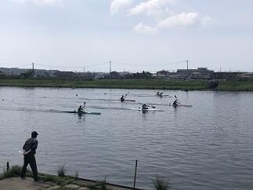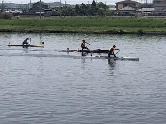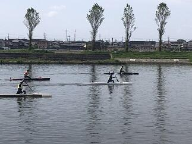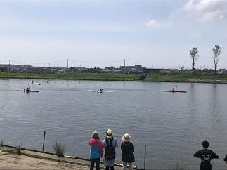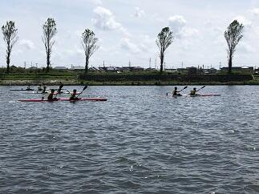
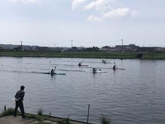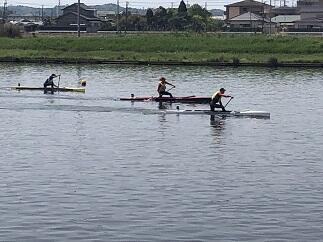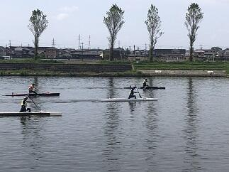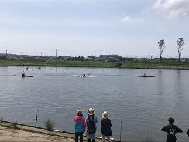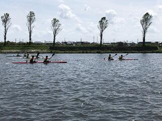 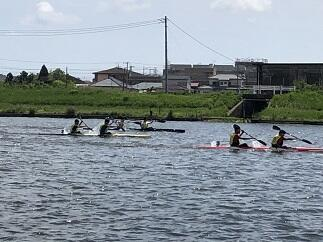
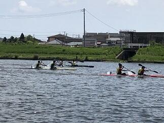 今日5月5日は令和元年度第２４回関東高等学校カヌー選手権大会千葉県予選会が香取市黒部川カヌー場で開催されました。午前中は風が穏やかで水面の波も少なくとても良いコンディションの下で予選の試合が行われました。昼近くから風が強くなりコンディションは悪くなりましたが無事に予定の試合を終了することができました。応援に来ていただいたご家族の皆様、大会の安全な運営にご協力いただいた香取市水上スポーツ指導員の皆様いつもありがとうございます。今後ともよろしくお願いいたします。
今日5月5日は令和元年度第２４回関東高等学校カヌー選手権大会千葉県予選会が香取市黒部川カヌー場で開催されました。午前中は風が穏やかで水面の波も少なくとても良いコンディションの下で予選の試合が行われました。昼近くから風が強くなりコンディションは悪くなりましたが無事に予定の試合を終了することができました。応援に来ていただいたご家族の皆様、大会の安全な運営にご協力いただいた香取市水上スポーツ指導員の皆様いつもありがとうございます。今後ともよろしくお願いいたします。 第７２回春季千葉県高等学校野球大会応援２
 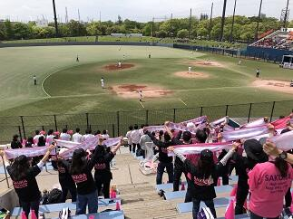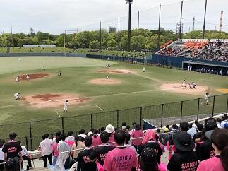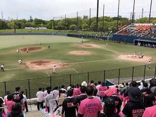
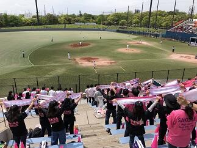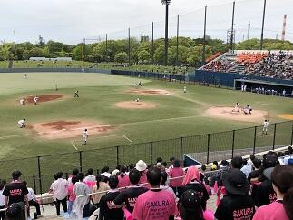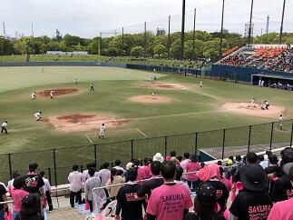
 今日令和元年5月1日は平成３１年度第７２回春季千葉県高等学校野球大会のベスト８決めの試合が各球場で行われました。本校は、市原市にあるゼットエーボールパークで木更津総合高校との試合でした。結果は、１ー５で負けましたが試合内容は次につながる多くの収穫があったと思います。今日の試合もいつもどおりの堅守や冷静な試合運びは健在でした。今日も多くのOBや保護者の皆さんが応援にきてくださり、本当にいつもありがとうございます。夏の大会に向けて引き続き皆様のご支援ご協力よろしくお願いします。
今日令和元年5月1日は平成３１年度第７２回春季千葉県高等学校野球大会のベスト８決めの試合が各球場で行われました。本校は、市原市にあるゼットエーボールパークで木更津総合高校との試合でした。結果は、１ー５で負けましたが試合内容は次につながる多くの収穫があったと思います。今日の試合もいつもどおりの堅守や冷静な試合運びは健在でした。今日も多くのOBや保護者の皆さんが応援にきてくださり、本当にいつもありがとうございます。夏の大会に向けて引き続き皆様のご支援ご協力よろしくお願いします。 平成最後の日,新元号「令和」への思いを込めて


 今日は、平成最後の日となりました。書道部の皆さんが明日から始まる新元号「令和」にちなんで「佐倉高校・新元号書道パフォーマンス」をユニモちはら台店で14：00から行いました。生徒、書道部OG,先生、保護者や地域の方々、多くの観客の見守るなか、部員たちは日ごろの練習の成果をいかんなく発揮して見事な作品を仕上げました。初めての学校外での、しかも多くの人々の前でのパフォーマンスとは思えないほど落ち着いた雰囲気の中で、字のバランスといい、勢いや力強さと繊細さを兼ね揃え気持ちのこもったとても良い作品ができました。書道部の皆さんお疲れ様でした。そして、感動をありがとう。このような機会を与えていただいたユニモちはら台店さんにはあらためてお礼申し上げます。作品は、しばらくの間ユニモさんで展示をされるそうですので、今日ご覧いただけなった方々もお近くにお立ち寄りの際は是非とも作品をご覧いただけると幸いです。
今日は、平成最後の日となりました。書道部の皆さんが明日から始まる新元号「令和」にちなんで「佐倉高校・新元号書道パフォーマンス」をユニモちはら台店で14：00から行いました。生徒、書道部OG,先生、保護者や地域の方々、多くの観客の見守るなか、部員たちは日ごろの練習の成果をいかんなく発揮して見事な作品を仕上げました。初めての学校外での、しかも多くの人々の前でのパフォーマンスとは思えないほど落ち着いた雰囲気の中で、字のバランスといい、勢いや力強さと繊細さを兼ね揃え気持ちのこもったとても良い作品ができました。書道部の皆さんお疲れ様でした。そして、感動をありがとう。このような機会を与えていただいたユニモちはら台店さんにはあらためてお礼申し上げます。作品は、しばらくの間ユニモさんで展示をされるそうですので、今日ご覧いただけなった方々もお近くにお立ち寄りの際は是非とも作品をご覧いただけると幸いです。 第７２回春季千葉県高等学校野球大会応援１


 今日は平成３１年度第７２回春季千葉県高等学校野球大会のベスト16決めの試合が各球場で行われました。本校は、習志野市にある第一カッター(秋津)球場で東海大学付属浦安高校との試合でした。結果は、3ー2で接戦を制して佐倉高校が勝つことができました。失点を覚悟しなければならないようなピンチも堅守で守りぬき、少ない得点の機会を着実にものにする冷静な試合運びはすばらしいものがありました。多くのOBや保護者の皆さんが応援にきてくださり、とても良い試合ができたと思います。いつも本当にありがとうございます。つぎは、対木更津総合高校とベスト８をかけた試合が5月1日に市原市のゼットエーボールパークにおいて１１：２０試合開始で予定されています。引き続き皆様の応援よろしくお願いします。
今日は平成３１年度第７２回春季千葉県高等学校野球大会のベスト16決めの試合が各球場で行われました。本校は、習志野市にある第一カッター(秋津)球場で東海大学付属浦安高校との試合でした。結果は、3ー2で接戦を制して佐倉高校が勝つことができました。失点を覚悟しなければならないようなピンチも堅守で守りぬき、少ない得点の機会を着実にものにする冷静な試合運びはすばらしいものがありました。多くのOBや保護者の皆さんが応援にきてくださり、とても良い試合ができたと思います。いつも本当にありがとうございます。つぎは、対木更津総合高校とベスト８をかけた試合が5月1日に市原市のゼットエーボールパークにおいて１１：２０試合開始で予定されています。引き続き皆様の応援よろしくお願いします。 吹奏楽部第38回定期演奏会 感動をありがとう


 本日は、吹奏楽部の第38回定期演奏会が成田国際文化会館で13：30から開催されました。定演は3部構成で、1部、3部は演奏発表で、第2部は音楽劇「メリー・ポピンズ」でした。まさに、集大成と呼ぶにふさわしい見事な演奏で、時間が過ぎるのも忘れるほどの素晴らしいものでした。音楽劇は、音楽のアレンジはもちろん舞台の小道具から衣装に至るまで何から何まで生徒の創意工夫で彩られていました。総合芸術として音楽劇「メリー・ポピンズ」とても素晴らしかったです。今回、定期演奏会にいらっしゃった生徒、保護者、卒業生、地域の皆様、今まで吹奏楽部の活動にご支援ご協力いただいたすべての皆様へあらためて感謝申しあげます。また、吹奏楽部3年生の皆さんいつも感動をありがとうございました。
本日は、吹奏楽部の第38回定期演奏会が成田国際文化会館で13：30から開催されました。定演は3部構成で、1部、3部は演奏発表で、第2部は音楽劇「メリー・ポピンズ」でした。まさに、集大成と呼ぶにふさわしい見事な演奏で、時間が過ぎるのも忘れるほどの素晴らしいものでした。音楽劇は、音楽のアレンジはもちろん舞台の小道具から衣装に至るまで何から何まで生徒の創意工夫で彩られていました。総合芸術として音楽劇「メリー・ポピンズ」とても素晴らしかったです。今回、定期演奏会にいらっしゃった生徒、保護者、卒業生、地域の皆様、今まで吹奏楽部の活動にご支援ご協力いただいたすべての皆様へあらためて感謝申しあげます。また、吹奏楽部3年生の皆さんいつも感動をありがとうございました。 県大会（弓道部男子、女子テニス部、ラグビー部）の応援

 今日は、千葉県スポーツセンターで開催された弓道部男子、テニス部女子、ラグビー部の県大会の応援に行ってきました。選手は先生、保護者、OB、OGの方々の応援を受けて試合に全力で臨んでいました。選手の皆さんお疲れ様でした。また、一歩伸びるきっかけを今日の試合から得られたことでしょう。結果を次に生かしましょう。今日も応援に来てくださった多くの皆様ありがとうございました。明日は、第一カッター（秋津）球場で野球の県大会が行われます。皆様の応援よろしくお願いします。
今日は、千葉県スポーツセンターで開催された弓道部男子、テニス部女子、ラグビー部の県大会の応援に行ってきました。選手は先生、保護者、OB、OGの方々の応援を受けて試合に全力で臨んでいました。選手の皆さんお疲れ様でした。また、一歩伸びるきっかけを今日の試合から得られたことでしょう。結果を次に生かしましょう。今日も応援に来てくださった多くの皆様ありがとうございました。明日は、第一カッター（秋津）球場で野球の県大会が行われます。皆様の応援よろしくお願いします。 弓道部（女子）関東関東大会千葉県予選


 今日4月27日は関東高校弓道大会千葉県予選会の女子の部が千葉県スポーツセンターにある千葉県弓道場で行われました。弓道部員、弓道部OBや保護者の方々の応援するなか女子の団体と個人の部の試合が行われました。礼節、姿勢、技術はもちろん高いメンタルコントロールが要求される試合が凛とした空気のなかで粛々と進められました。選手の皆さんお疲れ様でした。応援に来られた皆さんありがとうございました。明日は、男子の個人の部の試合が行われます。またすぐ近くのテニスコートでは女子のテニス部の県大会、サッカー・ラグビー場でラグビー部がベスト4決めの試合を行いますので明日も応援をよろしくお願いいたします。
今日4月27日は関東高校弓道大会千葉県予選会の女子の部が千葉県スポーツセンターにある千葉県弓道場で行われました。弓道部員、弓道部OBや保護者の方々の応援するなか女子の団体と個人の部の試合が行われました。礼節、姿勢、技術はもちろん高いメンタルコントロールが要求される試合が凛とした空気のなかで粛々と進められました。選手の皆さんお疲れ様でした。応援に来られた皆さんありがとうございました。明日は、男子の個人の部の試合が行われます。またすぐ近くのテニスコートでは女子のテニス部の県大会、サッカー・ラグビー場でラグビー部がベスト4決めの試合を行いますので明日も応援をよろしくお願いいたします。 書道パフォーマンス


 本日は、書道部が市原市のちはら台にあるunimoで４月３０日に行う「佐倉高校・新元号書道パフォーマンス」の練習を兼ねて昼休みに第２体育館において書道パフォーマンスを行いました。多くの生徒・先生が見守るなかで素晴らしい圧巻のパフォーマンスを披露してくれました。当日、作品が目の前で出来上がる様子を直接ご御覧いただけるとありがたいです。皆様のご来場をお待ちしています。
本日は、書道部が市原市のちはら台にあるunimoで４月３０日に行う「佐倉高校・新元号書道パフォーマンス」の練習を兼ねて昼休みに第２体育館において書道パフォーマンスを行いました。多くの生徒・先生が見守るなかで素晴らしい圧巻のパフォーマンスを披露してくれました。当日、作品が目の前で出来上がる様子を直接ご御覧いただけるとありがたいです。皆様のご来場をお待ちしています。 ダンス同好会パフォーマンス

 本日（4月24日）のお昼休みを利用して、本校ダンス同好会の3年生の引退記念パフォーマンスが行われました。多くの先生・生徒・保護者の方々の声援のなか、不断の努力による練習の成果が発揮されたパフォーマンスは、一段と冴えわたり多くの人の心に感動を与えてくれました。ダンサーとオーディエンスとの一体感が感じられるとても素晴らしいステージだったと思います。3年生のダンス同好会の皆さんお疲れさまでした。そして、いつも感動をありがとうございました。
本日（4月24日）のお昼休みを利用して、本校ダンス同好会の3年生の引退記念パフォーマンスが行われました。多くの先生・生徒・保護者の方々の声援のなか、不断の努力による練習の成果が発揮されたパフォーマンスは、一段と冴えわたり多くの人の心に感動を与えてくれました。ダンサーとオーディエンスとの一体感が感じられるとても素晴らしいステージだったと思います。3年生のダンス同好会の皆さんお疲れさまでした。そして、いつも感動をありがとうございました。 平成30年度全国高等学校ラグビーフットボール大会千葉県予選会


 今日10月14日（日）に平成30年度全国高等学校ラグビーフットボール大会千葉県予選会決勝トーナメントが始まりました。本校の第１回戦の相手は、県立小金高等学校と市立松戸高等学校の合同チームでした。試合は八幡公園球技場グラウンド（市原市）で行われました。昨日から雨が降っていましたが、朝からは小雨になり、試合中はほぼ止んでいました。ラグビー部OBの方々やその保護者の方々、ラグビー部、野球部、ラグビーファンの保護者の方々、野村教頭先生など多くの応援の方々が見守るなか、次の第2回戦日本体育大学付属柏高等等学校とのベスト８決めの試合に進むことができました。次の試合は10月21日（日）に秀明大学のグラウンドで13：10開始で予定されています。本日の応援ありがとうございました。今後とも応援よろしくお願いします。
今日10月14日（日）に平成30年度全国高等学校ラグビーフットボール大会千葉県予選会決勝トーナメントが始まりました。本校の第１回戦の相手は、県立小金高等学校と市立松戸高等学校の合同チームでした。試合は八幡公園球技場グラウンド（市原市）で行われました。昨日から雨が降っていましたが、朝からは小雨になり、試合中はほぼ止んでいました。ラグビー部OBの方々やその保護者の方々、ラグビー部、野球部、ラグビーファンの保護者の方々、野村教頭先生など多くの応援の方々が見守るなか、次の第2回戦日本体育大学付属柏高等等学校とのベスト８決めの試合に進むことができました。次の試合は10月21日（日）に秀明大学のグラウンドで13：10開始で予定されています。本日の応援ありがとうございました。今後とも応援よろしくお願いします。 第71回秋季千葉県高等学校野球大会応援よろしくお願いします。


 今日は、平成３０年度第71回秋季千葉県高等学校野球大会の第2回戦が各地で行われました。本校の第１回戦は９月２２日にナスパ･スタジアムで行われた松戸国際戦でした。延長14回の激戦を７－６で制して本日、本校の第2回戦は強豪千葉経済大学付属高等学校（以下 千葉経済）との試合となりました。本日も多くの保護者・ご家族の皆様とOBの方々が応援するなか、佐倉高校の先攻で始まった試合ですが、1回裏に千葉経済に1点先攻されましたが、2回表にすぐ2点取って1点差で5回表までリードをしていました。しかし、5回裏に千葉経済に2点取られて逆に1点リードのまま６回が終わりました。７回の表に、この試合を決定する運命の２点を取り返して１点リードし、６回からリリーフで出場した吉岡選手が、６回から９回まで０点で抑えて４－３で千葉経済に勝利しました。これでベスト１６入りです。今日先発の東海林選手、リリーフの吉岡選手を堅守でバックアップした守備力と大切な場面でつないで得点する攻撃力がかみ合った良い試合だったと思います。応援に来ていただいた保護者・ご家族やOBの皆様、本当にありがとうございました。次のベスト８決めとなる第３回戦は、２９日（土）に柏の葉公園野球場の第１試合で行われる習志野戦です。是非とも皆さんで応援に来ていただけると幸いです。
今日は、平成３０年度第71回秋季千葉県高等学校野球大会の第2回戦が各地で行われました。本校の第１回戦は９月２２日にナスパ･スタジアムで行われた松戸国際戦でした。延長14回の激戦を７－６で制して本日、本校の第2回戦は強豪千葉経済大学付属高等学校（以下 千葉経済）との試合となりました。本日も多くの保護者・ご家族の皆様とOBの方々が応援するなか、佐倉高校の先攻で始まった試合ですが、1回裏に千葉経済に1点先攻されましたが、2回表にすぐ2点取って1点差で5回表までリードをしていました。しかし、5回裏に千葉経済に2点取られて逆に1点リードのまま６回が終わりました。７回の表に、この試合を決定する運命の２点を取り返して１点リードし、６回からリリーフで出場した吉岡選手が、６回から９回まで０点で抑えて４－３で千葉経済に勝利しました。これでベスト１６入りです。今日先発の東海林選手、リリーフの吉岡選手を堅守でバックアップした守備力と大切な場面でつないで得点する攻撃力がかみ合った良い試合だったと思います。応援に来ていただいた保護者・ご家族やOBの皆様、本当にありがとうございました。次のベスト８決めとなる第３回戦は、２９日（土）に柏の葉公園野球場の第１試合で行われる習志野戦です。是非とも皆さんで応援に来ていただけると幸いです。 平成３０年度関東高等学校カヌー選手権選抜大会（その3）


 今日は決勝です。朝6;00の段階では雨は止んでいます。このまま天候が持ってくれてれば良いコンディションで競技が行えると思います。生徒たちは、予定していた朝のトレーニングメニュウを元気に行っていました。（朝６：００段階）
今日は決勝です。朝6;00の段階では雨は止んでいます。このまま天候が持ってくれてれば良いコンディションで競技が行えると思います。生徒たちは、予定していた朝のトレーニングメニュウを元気に行っていました。（朝６：００段階）お陰様で午前中、雨だけでなく風も無くて、とても良いコンディションのもとで競技を行うことができました。
決勝に進出した佐倉高校のすべての選手が入賞するとともに、高校別の総合成績でも男女とも総合２位となり、閉会式で表彰されました。これも菅澤先生、西山先生、宮代先生、加藤先生や引退した３年生と今まで頑張ってきた成果が結果として表れたのだと思います。本当におめでとうございます。各都県の素晴らしい選手たちとの競技を終えて解決すべき課題や目標ができて、またひと回り大きくなったのではないかと思います。菅澤先生、西山先生、選手の皆さん本当にお疲れ様でした。また、応援に来ていただいた保護者や家族の皆さんありがとうございました。
平成３０年度関東高等学校カヌー選手権選抜大会（その2）


 今日は、大会初日です。精進湖では朝６：００の段階では天候は雨でした。午前中は、強い雨は降りませんでしたがかなり濡れる雨でした。午後からは雨が止む時もあり風が強くなかったことが幸いでした。また、何とか生徒たちの頑張りもあって本日の全日程を無事に終えることができました。これも山梨県カヌー協会の先生方や関東高体連カヌー専門部の各都県の先生方のおかげであるとこころより感謝いたします。また、応援に来てくださった保護者の皆様ありがとうございました。明日はすべての種目の決勝が行われます。佐倉高校も男子カヤックシングル以外のすべての種目で決勝に進出しました。本当に頑張ったと思います。
今日は、大会初日です。精進湖では朝６：００の段階では天候は雨でした。午前中は、強い雨は降りませんでしたがかなり濡れる雨でした。午後からは雨が止む時もあり風が強くなかったことが幸いでした。また、何とか生徒たちの頑張りもあって本日の全日程を無事に終えることができました。これも山梨県カヌー協会の先生方や関東高体連カヌー専門部の各都県の先生方のおかげであるとこころより感謝いたします。また、応援に来てくださった保護者の皆様ありがとうございました。明日はすべての種目の決勝が行われます。佐倉高校も男子カヤックシングル以外のすべての種目で決勝に進出しました。本当に頑張ったと思います。明日も、引き続き今まで頑張ってきた自分と仲間を信じて力を発揮してもらいたいと思います。
平成３０年度関東高等学校カヌー選手権選抜大会（その１）


 平成３０年度関東高等学校カヌー選手権選抜大会が山梨県南都留郡富士河口湖町精進湖カヌー競技場で明日15日、明後日16日と開催されます。本日は、その大会の準備と合わせて関東高体連カヌー専門部秋季委員長会議や監督会議が行われました。また、天候については、あいにくと雨模様に加えて気温が上がらず風が吹くと防寒着がないとつらい一日でした。そんな中、生徒たちは運んできたカヌーの積み下ろし、艇の点検、活動拠点となるテントの設営などきびきびと支度を整え、明日からの競技に備えて念入りにフォームの点検や湖水の状況など確認しつつ練習を行っていました。大変充実した練習が行えたのではないかと思います。晴れていれば雄大な富士山に見守られながらの練習となったのですが、残念ながらお姿を拝むことはできませんでした。（上段右の写真参照）
平成３０年度関東高等学校カヌー選手権選抜大会が山梨県南都留郡富士河口湖町精進湖カヌー競技場で明日15日、明後日16日と開催されます。本日は、その大会の準備と合わせて関東高体連カヌー専門部秋季委員長会議や監督会議が行われました。また、天候については、あいにくと雨模様に加えて気温が上がらず風が吹くと防寒着がないとつらい一日でした。そんな中、生徒たちは運んできたカヌーの積み下ろし、艇の点検、活動拠点となるテントの設営などきびきびと支度を整え、明日からの競技に備えて念入りにフォームの点検や湖水の状況など確認しつつ練習を行っていました。大変充実した練習が行えたのではないかと思います。晴れていれば雄大な富士山に見守られながらの練習となったのですが、残念ながらお姿を拝むことはできませんでした。（上段右の写真参照）明日からの競技会が無事に行われ、参加する選手の皆さんが日ごろの練習の成果を存分に発揮できるよう祈念するとともに、選手の皆さんには競技を楽しんでもらいたいと思います。
野球部の皆さん感動をありがとう！！


 今日９：１０よりZOZOマリンスタジアムで市立習志野高校との試合が行われました。選手の皆さんはこの猛暑のなか、集中力を切らさず本当にすばらしいプレーを続けてくれました。また、本校の応援委員会、吹奏楽部、先生、生徒、保護者の皆様による大応援団は気持ちが一体となり、最後まで勝利を信じて応援を続けることができました。何よりもこんなに気持ちよく応援ができる環境を作り出せるすばらしい人たちと一緒に応援できたことがとてもうれしかったです。
今日９：１０よりZOZOマリンスタジアムで市立習志野高校との試合が行われました。選手の皆さんはこの猛暑のなか、集中力を切らさず本当にすばらしいプレーを続けてくれました。また、本校の応援委員会、吹奏楽部、先生、生徒、保護者の皆様による大応援団は気持ちが一体となり、最後まで勝利を信じて応援を続けることができました。何よりもこんなに気持ちよく応援ができる環境を作り出せるすばらしい人たちと一緒に応援できたことがとてもうれしかったです。試合の結果は、習志野高校には一歩及ばなかったものの、この経験から多くのことを学ぶことができ、次のステップへ進むことができると思います。
この試合で野球部も応援団から力をもらったと思いますが、野球部が見せてくれた頑張りから応援団も多くの感動と喜びをいただきました。野球部の生徒の諸君、堀内先生、藤井先生本当にありがとうございました。また、応援してくださった皆様本当にありがとうございました。今後ともよろしくお願いいたします。
野球応援No.1


 本日７月１３日９：００から青葉の森公園野球場で、本校野球部の初戦が行われました。対戦相手は、県立四街道北高等学校でした。佐倉高校の先攻で始まりました。５回表に３点先取しましたが、その裏に１点返され、６回裏には２点取られ追いつかれました。７回表に１点取ってリードしたまま９回裏を迎えましが、ここで再度追いつかれてしまいました。延長に入ってすぐの１０回表に２点取って勝ち越しその裏は０点で抑えて勝利をつかむことができました。野球部の皆さんおめでとうございます。また、応援に駆け付けていただいた保護者の皆様、応援委員会、吹奏楽部の皆さんありがとうございした。
本日７月１３日９：００から青葉の森公園野球場で、本校野球部の初戦が行われました。対戦相手は、県立四街道北高等学校でした。佐倉高校の先攻で始まりました。５回表に３点先取しましたが、その裏に１点返され、６回裏には２点取られ追いつかれました。７回表に１点取ってリードしたまま９回裏を迎えましが、ここで再度追いつかれてしまいました。延長に入ってすぐの１０回表に２点取って勝ち越しその裏は０点で抑えて勝利をつかむことができました。野球部の皆さんおめでとうございます。また、応援に駆け付けていただいた保護者の皆様、応援委員会、吹奏楽部の皆さんありがとうございした。このまま予定通り日程が進行すれば、７月１５日に市立習志野高等学校との試合がZOZOマリンスタジアムの第１試合に予定されていますので、応援のほどよろしくお願います。
野球応援練習


 本日、13:30から気持ちのこもった野球応援の練習が応援委員会と吹奏楽部、野球部員を中心に行われました。ここに参加してくれた生徒の諸君は、ここ一か月、文化祭の準備、自分の部活動、第２回定期考査の準備等あるなか、頑張る友人のために、応援練習を続けてきてくれました。そんな心温かい生徒諸君を見るにつけ、校長として誇りに思います。予定どおり試合が行われれば、７月１３日の青葉の森公園野球場の第１試合が本校野球部の初戦です。是非とも皆様、応援のほどよろしくお願いします。
本日、13:30から気持ちのこもった野球応援の練習が応援委員会と吹奏楽部、野球部員を中心に行われました。ここに参加してくれた生徒の諸君は、ここ一か月、文化祭の準備、自分の部活動、第２回定期考査の準備等あるなか、頑張る友人のために、応援練習を続けてきてくれました。そんな心温かい生徒諸君を見るにつけ、校長として誇りに思います。予定どおり試合が行われれば、７月１３日の青葉の森公園野球場の第１試合が本校野球部の初戦です。是非とも皆様、応援のほどよろしくお願いします。 夢 新舞台


 今日7月8日（日）は、第73回国民体育大会関東ブロック大会が、茨城県神栖市にできた新カヌー会場で開催されました。この会場は、来年茨城県で開催される「いきいき茨城ゆめ国体2019」のカヌー会場となるところです。イメージキャラクターの「いばラッキー」が開会式に参加してくれました。
今日7月8日（日）は、第73回国民体育大会関東ブロック大会が、茨城県神栖市にできた新カヌー会場で開催されました。この会場は、来年茨城県で開催される「いきいき茨城ゆめ国体2019」のカヌー会場となるところです。イメージキャラクターの「いばラッキー」が開会式に参加してくれました。今日の大会は、各都県を勝ち抜いてきた代表者だけが参加する大会ですのでどの競技も質の高いすばらしいものでした。多少風は強かったもののまずまずのコンディションで競技が行われてよかったです。参加した選手の諸君は得るものが多かったのではないでしょうか。今後に向けてステップアップのいい機会になったと思います。
歌声は世代を超えて


 今日は、佐倉高校同窓会である鹿山会の総会が開催されました。総会の会議終了後、本校の音楽部が「ア・カペラで行こう～佐倉高校音楽部＜鹿山会スペシャルステージ２０１８＞」と題して、その素晴らしいハーモニーを諸先輩方の前で披露してくれました。音楽部はア・カペラ・コーラスを中心にルネッサンス期の音楽から現代ポップスまで、幅広いジャンルの合唱に取り組んでおり、音楽を愛する心や伝統を受け継いで活動しています。今回のステージでは最後に参加者全員で合唱できるように校歌を選曲してくれました。世代を超えた校歌の響きは、いつもに増してすばらしいものでした。７０歳以上の差がある人たちが、心ひとつに歌える校歌の素晴らしさをあらためて感じました。素敵な時間を演出してくださった鈴木先生、秋保先生、音楽部の皆さん本当にありがとうございました。
今日は、佐倉高校同窓会である鹿山会の総会が開催されました。総会の会議終了後、本校の音楽部が「ア・カペラで行こう～佐倉高校音楽部＜鹿山会スペシャルステージ２０１８＞」と題して、その素晴らしいハーモニーを諸先輩方の前で披露してくれました。音楽部はア・カペラ・コーラスを中心にルネッサンス期の音楽から現代ポップスまで、幅広いジャンルの合唱に取り組んでおり、音楽を愛する心や伝統を受け継いで活動しています。今回のステージでは最後に参加者全員で合唱できるように校歌を選曲してくれました。世代を超えた校歌の響きは、いつもに増してすばらしいものでした。７０歳以上の差がある人たちが、心ひとつに歌える校歌の素晴らしさをあらためて感じました。素敵な時間を演出してくださった鈴木先生、秋保先生、音楽部の皆さん本当にありがとうございました。 関東大会0610－2


 お陰様で天候が危ぶまれましたが、競技中は、風はあったものの雨に降られることなく全日程を無事に終了することができました。関東高体連カヌー専門部の先生方、関東カヌー協会の皆さん精進湖観光協会の皆様ありがとうございました。選手の皆さんはとっても頑張ったと思います。関東大会に出場してレベルの高い競技を経験し、次のステップへの課題を見つけ、新たな目標に向かって今後の練習に生かせる多くの学びができたのではないでしょうか。いづれにしても本当にお疲れ様でした。
お陰様で天候が危ぶまれましたが、競技中は、風はあったものの雨に降られることなく全日程を無事に終了することができました。関東高体連カヌー専門部の先生方、関東カヌー協会の皆さん精進湖観光協会の皆様ありがとうございました。選手の皆さんはとっても頑張ったと思います。関東大会に出場してレベルの高い競技を経験し、次のステップへの課題を見つけ、新たな目標に向かって今後の練習に生かせる多くの学びができたのではないでしょうか。いづれにしても本当にお疲れ様でした。また、昨日から応援に来ていただいた保護者の皆様ありがとうございました。これからもよろしくお願いします。
関東大会0610


 今日はカヌーの関東大会の第2日で各種決勝が行われます。現在の天気は曇りなので、このまま競技中は雨が降らずに良いコンディションで競技が行えることを祈ります。カヌー部の生徒は朝のランニングに出かけました。話は違いますが、宿泊場所からほど近い所に天然記念物の「精進の大杉」があることを宮代先生に教えていただいたので、大杉のある村社諏訪神社に朝お詣りして大会の安全をお願いしてきました。その際、たまたまお会いした近所の方々に今日この後、雨が降らないか天気を聞いたところ「大丈夫じゃない」とおっしゃっていたのでほっとしています。選手の皆さんちょっと風があり寒いですが熱い思いで頑張ってください。
今日はカヌーの関東大会の第2日で各種決勝が行われます。現在の天気は曇りなので、このまま競技中は雨が降らずに良いコンディションで競技が行えることを祈ります。カヌー部の生徒は朝のランニングに出かけました。話は違いますが、宿泊場所からほど近い所に天然記念物の「精進の大杉」があることを宮代先生に教えていただいたので、大杉のある村社諏訪神社に朝お詣りして大会の安全をお願いしてきました。その際、たまたまお会いした近所の方々に今日この後、雨が降らないか天気を聞いたところ「大丈夫じゃない」とおっしゃっていたのでほっとしています。選手の皆さんちょっと風があり寒いですが熱い思いで頑張ってください。 関東大会0609－２


 カヌー関東大会第1日はお陰様で、開会式から1日目に予定していた準決勝までの競技を日程どおり行うことができました。明日は決勝を残すのみです。開会式の後、千葉県選手団（小見川高校と佐倉高校）は、菅澤先生から試合前のアドバイスを受け、皆で円陣を組んで気合を入れました。
カヌー関東大会第1日はお陰様で、開会式から1日目に予定していた準決勝までの競技を日程どおり行うことができました。明日は決勝を残すのみです。開会式の後、千葉県選手団（小見川高校と佐倉高校）は、菅澤先生から試合前のアドバイスを受け、皆で円陣を組んで気合を入れました。今日は、小見川高校はシングルやペア、フォア競技で決勝に進出し、佐倉高校は、シングル競技では惜しくも決勝に進めませんでしたが、ペア、フォア競技のすべての競技で決勝に進出しました。両校ともおめでとうございます。明日は今日以上に実力を存分に発揮できて、良い成績が出せるといいですね。いずれにしても、ここまで来たら自分と仲間を信じて、競技を思いっきり楽しんでほしいと思います。明日の競技開始は９：００です。天気がとても心配です。今日も遠いところ応援に来てくださった保護者の皆さんやOBの皆さんありがとうございました。
関東大会前日


 明
明 日から2日間の予定で関東高等学校カヌー大会第２３回関東高等学校カヌー選手権大会が山梨県南都留郡河口湖町精進湖カヌー競技場で開催されます。まずは、本当に間近に見える富士山の横で競技ができる素晴らしさを感じました。また、精進湖の水がとてもきれいで稚魚が岸部にいっぱい泳いでいました。それにしても、山の天候の変化は激しいもので、昼過ぎまで富士山のお姿が大変くっきりと見えていたのもつかの間、風が強くなってきたなと思う間もなく、雲が出てきてたちまち見えなくなってしまいました。千葉県から参加の選手は皆とても仲が良く、みんなで、一緒にトラックで運んできた艇を降し、自分たちのベースとなる場所にテントを張り、競技場に慣れるための練習を行っていました。また、明日からの競技に出場するための検艇（艇の重量の検査）やライフジャケットの浮力の検査等を受けていました。
日から2日間の予定で関東高等学校カヌー大会第２３回関東高等学校カヌー選手権大会が山梨県南都留郡河口湖町精進湖カヌー競技場で開催されます。まずは、本当に間近に見える富士山の横で競技ができる素晴らしさを感じました。また、精進湖の水がとてもきれいで稚魚が岸部にいっぱい泳いでいました。それにしても、山の天候の変化は激しいもので、昼過ぎまで富士山のお姿が大変くっきりと見えていたのもつかの間、風が強くなってきたなと思う間もなく、雲が出てきてたちまち見えなくなってしまいました。千葉県から参加の選手は皆とても仲が良く、みんなで、一緒にトラックで運んできた艇を降し、自分たちのベースとなる場所にテントを張り、競技場に慣れるための練習を行っていました。また、明日からの競技に出場するための検艇（艇の重量の検査）やライフジャケットの浮力の検査等を受けていました。各県代表の委員長会議や監督会議での丁寧な注意事項の確認はもとより、１都7県からお集まりの先生方やカヌー協会の皆様のおかげで安全安心な大会運営が準備段階からしっかりとなされていることが改めてわかりました。皆様に本当に感謝です。明日から行われる各種競技で選手が存分にそのもてる力を発揮できる大会となることを期待します。
合わせて、この土日に行われるソフトボール、卓球、ソフトテニス、弓道の県大会に出場する佐倉高校の選手の皆さん、今までやってきた来たことや仲間と自分を信じて頑張ってください。
優勝旗帰還
 先日行われた千葉県高等学校総合体育大会における学校対抗 カヌー男子の優勝旗が帰ってきました。また、一年間本校で飾らせていただけることになりました。とても光栄なことです。
先日行われた千葉県高等学校総合体育大会における学校対抗 カヌー男子の優勝旗が帰ってきました。また、一年間本校で飾らせていただけることになりました。とても光栄なことです。なお、カヌー部は、6月8日、9日と山梨県の精進湖で開催される関東高等学校カヌー選抜大会に出場します。日頃の練習の成果を存分に発揮できることを期待します。
このページも御覧ください（クリックしてください）。
↓
カヌー部 関東大会県予選報告 へ
校長花ごよみ 県予選の様子 へ
魂に響く歌声
今日6月3日は千葉県文化会館大ホールで、第７３回千葉県合唱祭（C,Dブロック）が開催されました。本校の音楽部は、今日のDブロックの最後の演奏でした。鈴木珠美先生の指揮のもと、”Mass for Four Voiceｓ”より「Agnus Dei」と、混成合唱とピアノのための「この星の上で」より無伴奏版「はる」の２曲が演奏されました。とても声が良く出ていて透き通った歌声が会場全体に響き渡っていました。合唱祭の最後はアンコールコーラスとして本校の音楽部の皆さんを中心に、他の参加者の皆さんも客席から参加しての合唱でした。本校音楽部2年生中村ほのかさんの指揮で、曲は千葉県合唱連盟愛唱曲「明日」を合唱しての閉演となりました。音楽部の皆さん素敵な歌声をありがとうございました。そして、皆さんお疲れ様でした。
啐啄同時


 今日は、昨日に引き続き高校総体の千葉県予選会と平成30年度千葉県民体育大会第二部（国体カヌースプリント競技県予選会）が黒部川カヌー場で開催されました。天気も良く風も落ち着いていてとても良い環境で競技を行うことができました。国体の方は高校の選手のほか、中学生や大学生の選手が参加してとても素晴らしい競技が展開されました。本日は、ご多用のところ千葉県教育庁教育振興部体育課から林指導主事がいらして、幅広い選手層の競技を視察され応援してくださいました。
今日は、昨日に引き続き高校総体の千葉県予選会と平成30年度千葉県民体育大会第二部（国体カヌースプリント競技県予選会）が黒部川カヌー場で開催されました。天気も良く風も落ち着いていてとても良い環境で競技を行うことができました。国体の方は高校の選手のほか、中学生や大学生の選手が参加してとても素晴らしい競技が展開されました。本日は、ご多用のところ千葉県教育庁教育振興部体育課から林指導主事がいらして、幅広い選手層の競技を視察され応援してくださいました。今回の競技で思い通り実力が発揮できた人もいればそうでなかった人もいるわけです。力が発揮できなかった原因としては、自分の力が足りていなかった、または、環境がそろっていなかったのかもしれません。そんな時には、機が熟すのを待ちながら、今一度自分の腕を磨くことに専念してみましょう。必ず結果として現れる時がきます。
昨日、今日と香取市水上スポーツ指導員の皆様には大会の安全な運営にご尽力をいただき本当にありがとうございました。今後ともよろしくお願いいたします。
大機大用

生徒にとってこのような大きな大会へのチャレンジの機会を頂けることは大変ありがたいことです。日ごろから、志を高く持ち、大きなチャンスを生かせるように強い意志をもって競技に臨み、そのチャンスを使いこなせるように力をつけておきましょう。そうすれば望む結果が得られます。関東大会予選に引き続き本日も香取市水上スポーツ指導員の皆様には大会の安全な運営にご尽力をいただき本当にありがとうございました。明日もよろしくお願いいたします。
一行三昧
本日5月6日は、5月4日に中止になった第23回関東高等学校カヌー大会千葉県予選会を「佐倉ふるさと広場」近くの鹿島川で開催しました。今日の競技開始時の天候は、前2日間とは違って風が治まっていて、絶好のコンディションのなかで始めることができました。途中から少し風が出てきましたが、本日は、予定したすべての競技を無事に終えることができました。選手は、競技に集中できてとても良い大会であったと思います。そうした選手の姿を見ていると、何を行うにしても、そのことだけに集中して、打ち込んでいれば無駄な動作や雑念が生まれる余地も無くなりとても良い結果がでるものだと思いました。また、今日まで準備と運営をしてくださったカヌー専門部の先生方や関係者の皆様に感謝、感謝です。また、今日お越しいただいた、ご家族の皆様やカヌー部のOB、OGの皆様、応援ありがとうございました。本日、関東大会選考を通過した生徒には、精進湖で行われる関東大会での活躍を期待するとともに、通過できなかった生徒にも5月末のインターハイ予選、国体予選での頑張りを期待したいと思います。


疾風知勁草

 本日は、平成３０年度関東高等学校カヌー大会第２３回関東高等学校カヌー大会千葉県予選が香取市黒部川カヌー場で開催される予定でした。早朝には、昨日（５月３日）の雨と強風は治まり、雲一つない晴天に恵まれていました。ところが、８時３０分頃から風が強くなり、開会式を行っている最中にかなり激しくなってまいりました。すぐに、参加生徒たちには、大会役員の先生から待機がかかり、競技が安全にできるか検討するために、水面の状態や今後の天候について確認がされました。写真にもあるように空は晴天ですが、強風のため水面は大きく波打っている状況でした。予報では、風は、今後も明日にかけて吹き続けるとのことで、生徒の安全を第一に考え、本日の大会は中止となりました。皆さんの話では、これほど大会の時に強風になったのは今まで無かったそうですが、このような状況にあっても、てきぱきとやるべきことを的確にこなしている先生方や関係者の皆さんをあらためて素晴らしく、頼もしく感じました。
本日は、平成３０年度関東高等学校カヌー大会第２３回関東高等学校カヌー大会千葉県予選が香取市黒部川カヌー場で開催される予定でした。早朝には、昨日（５月３日）の雨と強風は治まり、雲一つない晴天に恵まれていました。ところが、８時３０分頃から風が強くなり、開会式を行っている最中にかなり激しくなってまいりました。すぐに、参加生徒たちには、大会役員の先生から待機がかかり、競技が安全にできるか検討するために、水面の状態や今後の天候について確認がされました。写真にもあるように空は晴天ですが、強風のため水面は大きく波打っている状況でした。予報では、風は、今後も明日にかけて吹き続けるとのことで、生徒の安全を第一に考え、本日の大会は中止となりました。皆さんの話では、これほど大会の時に強風になったのは今まで無かったそうですが、このような状況にあっても、てきぱきとやるべきことを的確にこなしている先生方や関係者の皆さんをあらためて素晴らしく、頼もしく感じました。本日の大会自体は、中止となってしまいましたが、本日まで長い時間をかけて準備されてきた先生方や大会運営に関わった多くの関係機関の皆様には本当にありがとうございました。今後ともよろしくお願い申し上げます。
別無工夫
本日は、ゴールデンウィーク中ということで、朝の通勤列車が、心なしか空いていたように思えました。この期間中も多くの部活動が各種大会や対外活動に参加しています。スポーツや芸術などでは、練習ではできていたのに、本番では、思ったように実力が発揮できなかった。こんな経験は誰しも持っているのではないでしょうか。その原因のひとつとして、本番では「うまくやろう」「失敗してはいけない」と必要以上に力みすぎてしまうことがあげられるます。不必要な力みが加わることで、いつも通りの力が発揮できなくなってしまうのです。これはどんなに素晴らしいトップレベルの選手にもあることです。ですから、プロの選手などは本番前に普段通りの力を発揮できるように平常心を保つための独自の方法を持っています。（例えば、プロ野球選手がバッターボックスで行う決まった所作など）生徒の皆さんも練習で今までできていたなら、うまくやろうと本番で必要以上に工夫することはありません。普段から一所懸命に取り組んできた今の自分を信じていれば、どんな状況でも自然体でうまくいくはずです。皆さんの健闘を祈ります。
光陰如箭

 五月に入り正に皐月晴れの良い天気に恵まれました。学校の「つつじ」は、徐々に少しずつ咲くのではなく、いっきに見事に咲いています。私は、着任して一ケ月がたちました。この一ケ月、ばたばたしていた私とは対照的に、生徒さんたちや先生方、事務職員の皆さんが、目的に向かって着実に進んでいる姿を目の当たりにすることができ、本当に頼もしく誇らしく思っているところです。こうした姿を見ていると本当に、一時一時を大切に精一杯努力することの大切さをあらためて感じる次第です。さて、話はかわりますが、４月３０日（月）は、吹奏楽部の定期演奏会を成田国際文化会館で開催することができました。保護者、ご家族、ご友人をはじめ、地域の方々や小・中学生など多くの皆様に足をお運びいただき、あらためて皆様に感謝申し上げます。本当にありがとうございました。今後とも、ご支援ご協力よろしくお願いいたします。
五月に入り正に皐月晴れの良い天気に恵まれました。学校の「つつじ」は、徐々に少しずつ咲くのではなく、いっきに見事に咲いています。私は、着任して一ケ月がたちました。この一ケ月、ばたばたしていた私とは対照的に、生徒さんたちや先生方、事務職員の皆さんが、目的に向かって着実に進んでいる姿を目の当たりにすることができ、本当に頼もしく誇らしく思っているところです。こうした姿を見ていると本当に、一時一時を大切に精一杯努力することの大切さをあらためて感じる次第です。さて、話はかわりますが、４月３０日（月）は、吹奏楽部の定期演奏会を成田国際文化会館で開催することができました。保護者、ご家族、ご友人をはじめ、地域の方々や小・中学生など多くの皆様に足をお運びいただき、あらためて皆様に感謝申し上げます。本当にありがとうございました。今後とも、ご支援ご協力よろしくお願いいたします。